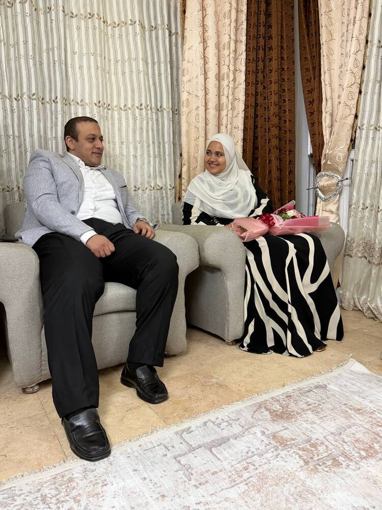
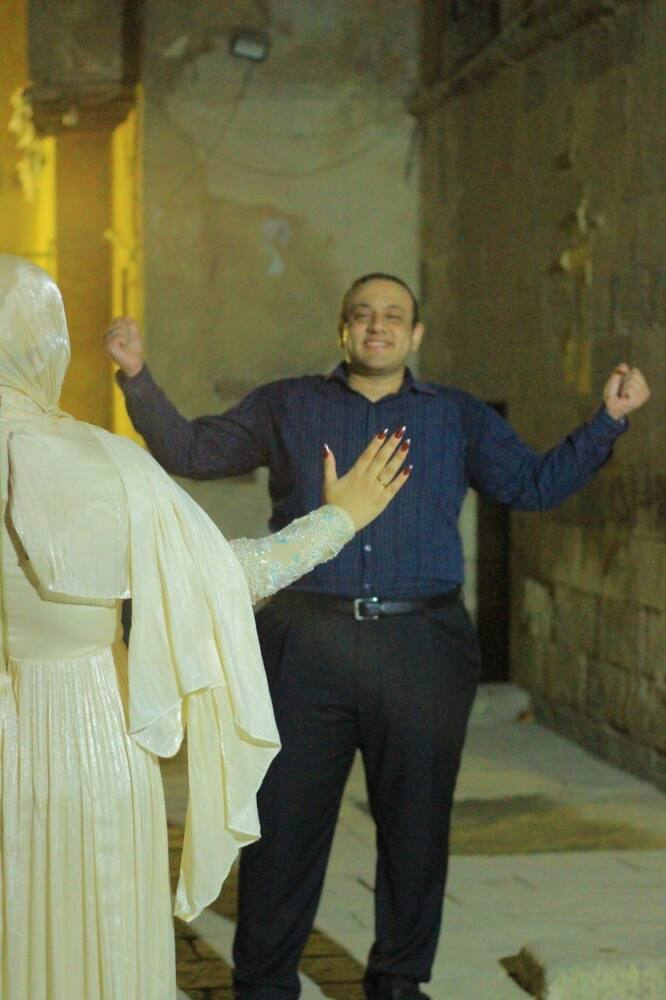
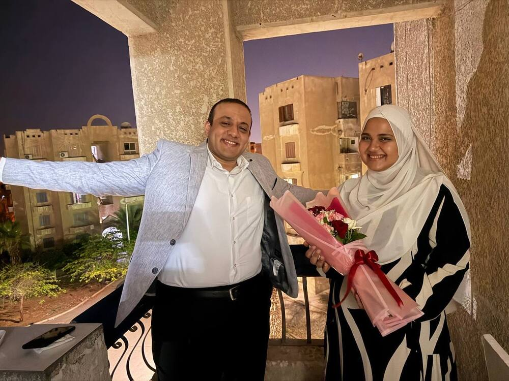
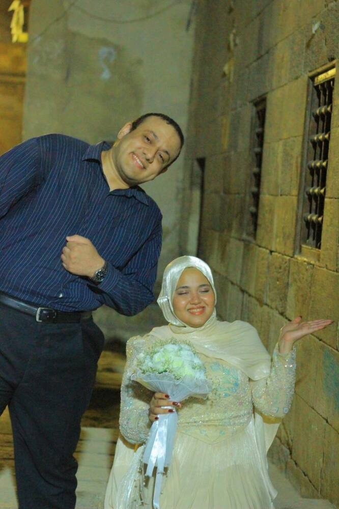
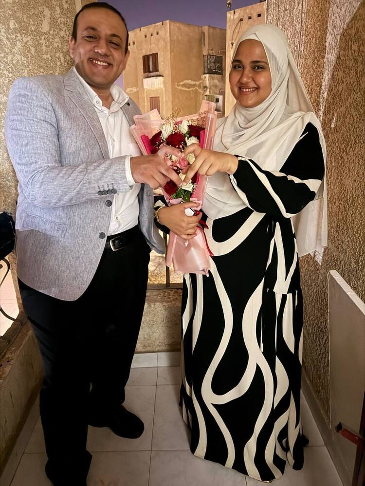
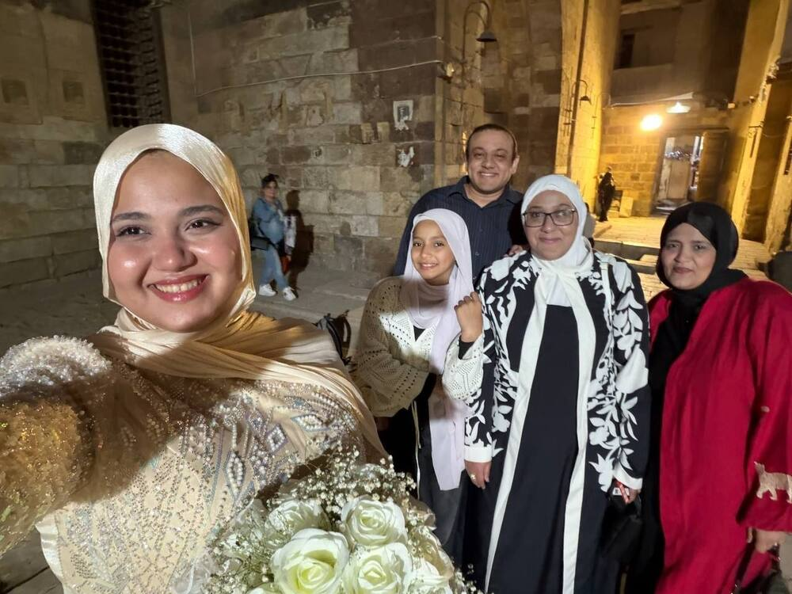
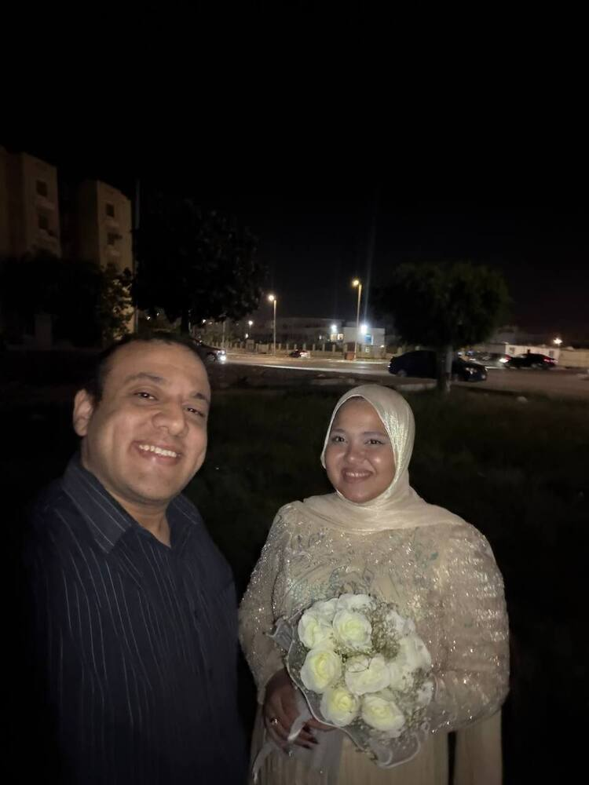
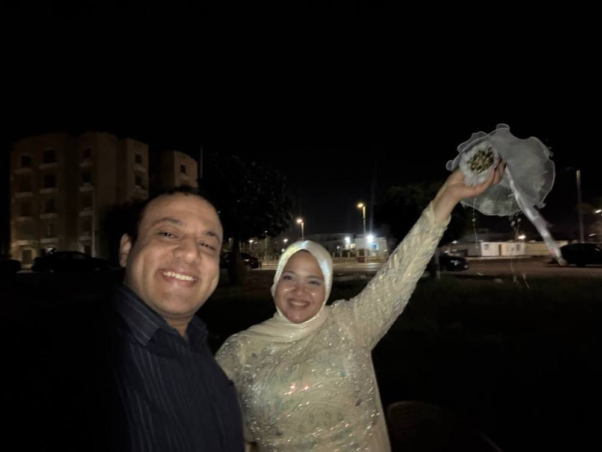
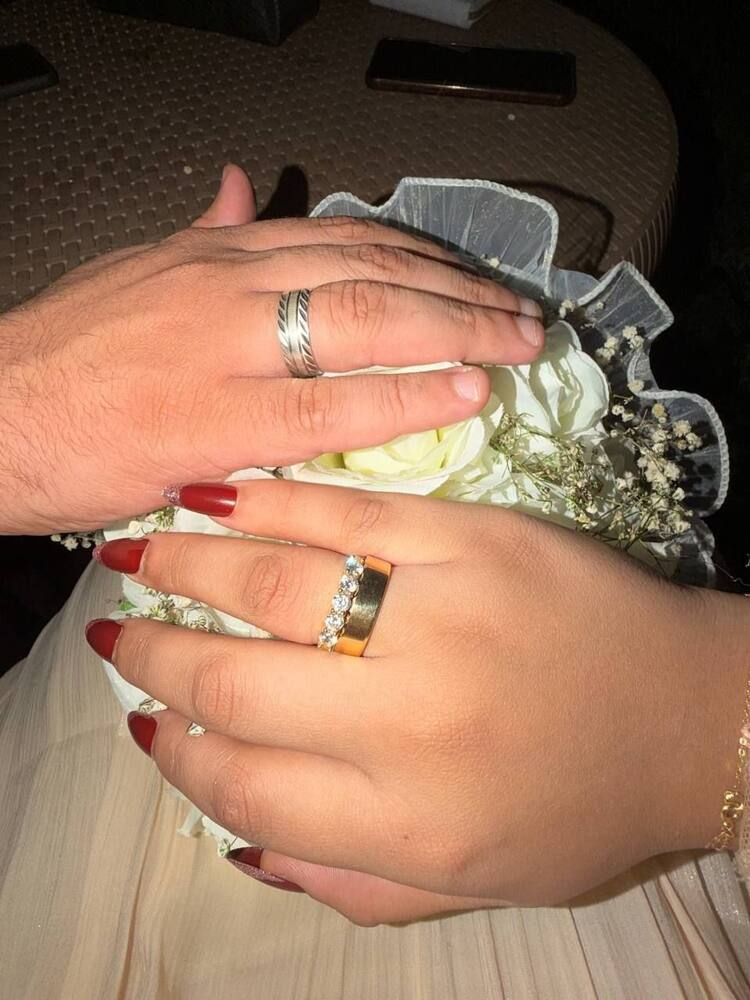

30 May 2026
اليوم اللي بدأت فيه حكايتنا، واللي من بعده الدنيا بقت مختلفة.
يمكن البداية كانت بسيطة، لكن اللي جه بعدها كان أكبر من أي حاجة كنا متخيلينها.
ومن يومها... بقى في حكاية اسمها أُمـنـيـة وعَبـدُالله. ❤️
مكان صغير جمع حكايتنا... صورنا، ذكرياتنا، ضحكتنا، وكل لحظة حلوة لسه بتكبر معانا.
اليوم اللي بدأت فيه حكايتنا، واللي من بعده الدنيا بقت مختلفة.
يمكن البداية كانت بسيطة، لكن اللي جه بعدها كان أكبر من أي حاجة كنا متخيلينها.
ومن يومها... بقى في حكاية اسمها أُمـنـيـة وعَبـدُالله. ❤️
أول شهر كان فيه مشاكل كتير، واختبارات كتير، وأيام مش سهلة علينا.
لكن الحمد لله قدرنا نعديها، وكل مرة الدنيا كانت تضيق، كنا بنلاقي طريق نرجع بيه لبعض.
يمكن كان أول شهر مليان مطبات... بس الحمد لله عدّيناه سوا. 🤍
صور صغيرة... وكل واحدة فيهم شايلة حكاية كبيرة.









اللحظات اللي الصورة لوحدها مش كفاية ليها.
كلام صغير قاله القلب في لحظات مختلفة...
حبك صالحني عالدنيا ❤️🌍 صباح الخير على الشخص الي من ساعة ما دخل في حياتي وأنا حاسة إن حتى الأيام الوحشة بتهون عشان انت فيها 🥺❤️ ربنا يخليك ليا ويفضل قلبك دايما اقرب مكان لقلبي 🫂❤️ وربنا يا حبيبي يفتحلك كل أبواب الخير والرزق ويريح قلبك ويحققلك كل حاجة نفسك فيه ويباركلك في شغلك ووقتك وتعبك ويجعل كل خطوة بتاخدها في حياتك سبب في حاجة أحلى جاية لك 🤲🏻❤️ يرزقك راحة بال ما بعدها تعب ويجعل نصيبك من الدنيا جميل ومن الآخرة أجمل ويجمعني بيك دايما على خير ويجعلنا سكن وراحة وأمان لبعض العمر كله 🥹❤️🌍
أيام وذكريات صغيرة بنكتبها واحدة واحدة... الأحدث فوق.
أول جواب كتبته ليك...
كل سنة وأنت أجمل هدية كتبها ربنا في عمري.
عارف؟ طول عمري وأنا بحلم أعيش قصة حب مختلفة، قصة لما أسمع عنها أحس إنها شبه الروايات، لكن عمري ما تخيلت إن بطلها هيكون الشخص اللي كان واقف قدامي من سنين، ولا إن القدر هيبعدنا، وبعدين يرجع يجمعنا في الوقت اللي ربنا اختاره.
يمكن الأيام أخدتنا في طرق مختلفة، لكن قلبي كان دايمًا عارف إن في خيط بيني وبينك عمره ما انقطع.
في وقت تايهة فيه، كنت أنت السند. نورتلي الطريق وأنا مش شايفة، ومسكت إيدي من غير ما تطلب مني أي مقابل. يمكن أنت ما كنتش تعرف قد إيه وجودك كان بيهون عليا الدنيا، لكن أنا كنت بحس بالأمان لمجرد إنك موجود.
عدت علينا أيام كانت صعبة، وأوقات كنت بحارب فيها قلبي. كنت بخاف تكون لحد غيري، وبخاف أصحى على حقيقة إنك مش من نصيبي. ومع ذلك... عمري ما ندمت إني حبيتك، ولا مرة حسيت إن ثقتي فيك كانت في غير مكانها.
وصلت بيا الحال إني أقنعت نفسي إن مش لازم تكون ليا... يكفيني إنك تكون بخير، وإن الضحكة ما تفارقش وشك، حتى لو كنت أنا بعيدة.
وده يمكن يكون معنى الحب الحقيقي... ❤️
إنك تدعي للشخص بالسعادة حتى لو قلبك بيتمنى يبقى سببها.
ولما في يوم قلتلي إنك عايزني أنا... مش هبالغ لو قلتلك إن الزمن وقف. كنت بحلم ولا كنت صاحية؟ فضلت فترة طويلة مش مستوعبة إن الدعوة اللي كانت جوا قلبي ربنا استجاب لها بالشكل ده.
يمكن أنا ما حبيتكش من أول يوم، لكن الحقيقة إن قلبي كان طول عمره بيقرب منك خطوة، لحد ما لقى نفسه بين إيديك من غير ما يحس.
وجودك في حياتي نعمة، وأنت بالنسبة لقلبي وطن، وكل مرة ببصلك بحس إن ربنا عوضني عن حاجات كتير كنت فاكرة إنها راحت.
وأوعدك... هفضل طول عمري أحاول أكون البيت اللي ترتاح فيه، والونس بعد تعبك، والضحكة وسط همومك، والسند وقت ضعفك، والدعوة الحلوة اللي تسبقك في كل خطوة.
هحب نجاحك كأنه نجاحي، وهفرح بفرحتك قبل فرحتي، ولما الدنيا تضيق عليك هتلاقيني أول واحدة ماسكة إيدك، أقولك:
«أنا معاك... ومش همشي.» ❤️
وأحب أقولك كام بيت من قلبي ليك:
يا ساكنًا بين الأضلع ما له وطنٌ سواك،
ويا نبضًا إذا غاب، ضاقت الدنيا بما فيها.
ما كنتُ أطلب من الدنيا سوى يدٍ
إذا تعبتُ... قالت: ها أنا معك.
وإن سألتَ القلبَ يومًا: من حبيبُك؟
لأجاب دون تردد:
هو الذي إذا حضر... سكن القلب،
وإذا ابتسم... أزهرت الروح،
وإذا اقترب... هانت الدنيا بما فيها.
وأخيرًا...
أنت حبيب زمان...
وحبيب النهارده...
وحبيب كل يوم جاي بإذن الله. ❤️
كل سنة وأنت أجمل قدر، وأحن قلب، وأقرب إنسان لروحي.
بحبك يا عبد الله...
حبًا لو وُزِّع على أيامي كلها، لكفاها سعادةً وعمرًا.
سأطلب من الله أن يبقيك معي مرتين... 🤍
مرة هنا،
ومرة بالجنة.
أحلى قرار أنا خدته. ❤️
يا أجمل حلم بين النجوم،
يا حب جه بعد انتظار ونور قلبي بعد الغيوم،
من يوم ما شافتك عيوني وانت بقيت كل سنيني،
بقيت أشوف الدنيا بيك وأحس إنك أجمل يقيني.
وأنا معاك ماليش أمان غير حضنك وقلبك الحنان،
لو تطلب عيني أديهالك وأقولك حاضر في أي مكان.
دي فرصة ربنا بعتهالي وأغلى هدية في الليالي،
وهفضل ماسكة في إيديك ومستحيل يوم أسيبها.
ولو في يوم حاجة ضايقتك أنا أول قلب هيواسيك،
واللي يفكر يكسر خاطرك يلاقيني قبله أحميك.
يا عبد الله يا نبض قلبي ويا أول وآخر حبي،
لو خيروني بين الدنيا هختارك أنت وكل دربي. 🤍
من قلب أحبك بشدة
أمنية
رسايل بتطير من قلبي لقلبك... اضغط على الرسالة عشان تفتحها.
كل مرة حد بيفتح الموقع بيتسأل سؤال... وده اللي اتقال بصراحة.
كل ثانية بتعدي... بتقربنا من اليوم اللي هنبقى فيه لبعض على طول.
كل ذكرى جاية هنسيبلها مكان هنا.